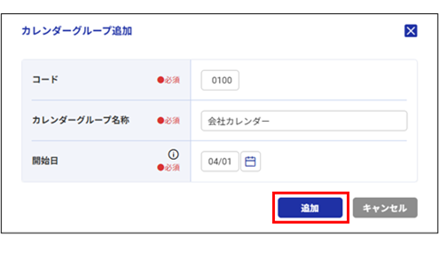

休日を登録する
会社や金融機関などの休日を管理するカレンダーを会社ごとに登録します。
『LucaTech GX』では、土曜・日曜・祝日が休日の「標準カレンダー」を用意しています。標準カレンダーは当年を含む12年分（過去10年、当年、翌年）が表示されます。年度更新を行うと、最も古い年度のカレンダーは削除され、翌年度分は毎年2月に自動で追加されます。
標準カレンダーとは異なる休日を登録する場合は、カレンダーグループを作成し、グループごとにカレンダーを作成します。年度更新を行ってもカレンダーは自動で追加されないため、新しい年のカレンダーを作成する必要があります。
⇒『カレンダーを作成する』参照
作成したカレンダーは、『銀行登録』などで使用します。
